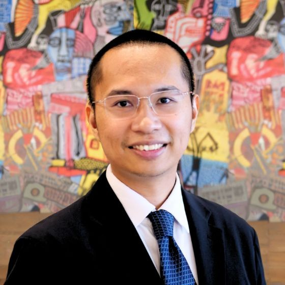

<!doctype html>
<html lang="id">
<head>
  <meta charset="utf-8" />
  <meta name="viewport" content="width=device-width,initial-scale=1" />
  <title>Harriman Saragih</title>

  <style>
    :root{
      --bg:#ffffff;
      --text:#1f2937;
      --muted:#6b7280;
      --link:#2563eb;
      --border:#e5e7eb;
      --card:#f9fafb;
      --max:1100px;
    }
    *{ box-sizing:border-box; }
    html,body{ height:100%; }
    body{
      margin:0;
      font-family: system-ui, -apple-system, Segoe UI, Roboto, Helvetica, Arial, "Noto Sans", "Apple Color Emoji","Segoe UI Emoji";
      background:var(--bg);
      color:var(--text);
      line-height:1.55;
    }
    a{ color:var(--link); text-decoration:none; }
    a:hover{ text-decoration:underline; }
    .wrap{ max-width: var(--max); margin: 0 auto; padding: 28px 18px 52px; }
    .layout{ display:grid; grid-template-columns: 280px 1fr; gap: 28px; align-items:start; }

    /* Sidebar */
    .sidebar{
      position: sticky;
      top: 18px;
      border-right: 1px solid var(--border);
      padding-right: 18px;
    }
    .profile{ display:flex; flex-direction:column; gap: 10px; margin-bottom: 18px; }
    .avatar img{
      width: 100%;
      height: 100%;
      object-fit: cover;
      object-position: 50% 35%; /* geser fokus ke atas (wajah) */
    }
    .name{ font-size: 28px; font-weight: 780; margin: 0; }
    .role{ margin: 0; color: var(--muted); font-size: 14px; }
    nav ul{
      list-style:none; padding:0; margin: 16px 0 0;
      display:flex; flex-direction:column; gap: 10px;
    }
    nav a{
      display:block; padding: 8px 10px;
      border-radius: 10px;
    }
    nav a[aria-current="page"]{
      background: var(--card);
      border: 1px solid var(--border);
      text-decoration:none;
      font-weight: 650;
    }

    /* Main content */
    main{ padding-left: 2px; }
    section{
      padding: 6px 0 22px;
      border-bottom: 1px solid var(--border);
      margin-bottom: 22px;
    }
    section:last-child{ border-bottom: none; margin-bottom: 0; }

    .section-title{
      font-size: 22px;
      font-weight: 780;
      margin: 0 0 10px;
    }
    .subtle{ color: var(--muted); margin: 0 0 12px; }

    .card{
      background: var(--card);
      border: 1px solid var(--border);
      border-radius: 14px;
      padding: 14px;
    }

    .two-col{
      display:grid;
      grid-template-columns: 1fr 1fr;
      gap: 18px;
    }

    ul{ margin: 10px 0 0; padding-left: 18px; }
    li{ margin: 6px 0; }

    .badge{
      display:inline-block;
      font-size: 12px;
      color: var(--muted);
      border: 1px solid var(--border);
      background:#fff;
      padding: 2px 8px;
      border-radius: 999px;
      margin-top: 8px;
    }

    @media (max-width: 900px){
      .layout{ grid-template-columns: 1fr; }
      .sidebar{
        position: static;
        border-right: none;
        padding-right: 0;
        border-bottom: 1px solid var(--border);
        padding-bottom: 18px;
      }
      nav ul{ flex-direction: row; flex-wrap: wrap; gap: 8px; }
      nav a{ border: 1px solid var(--border); }
      main{ padding-left: 0; }
      .two-col{ grid-template-columns: 1fr; }
    }
  </style>
</head>

<body>
  <div class="wrap">
    <div class="layout">
      <aside class="sidebar">
        <div class="profile">
          <div class="profile">
            <div class="avatar">
              
            </div>
          
            <h1 class="name">Harriman Saragih</h1>
          
            <p class="role">
              Executive Education | Business Innovation | Professional Learning
            </p>
          </div>

        <nav aria-label="Navigasi utama">
          <ul>
            <li><a href="#home" aria-current="page">Home</a></li>
            <li><a href="#executive-education">Executive Education</a></li>
            <li><a href="#research">Research</a></li>
            <li><a href="#presentations">Presentations &amp; Talks</a></li>
            <li><a href="#resume">Resume</a></li>
          </ul>
        </nav>
      </aside>

      <main>
        <!-- HOME -->
        <section id="home">
          <h2 class="section-title">Home</h2>
          <div class="card">
            <p>
              Dr. Harriman Saragih adalah Fellow of the Higher Education Academy (UK) dan saat ini mengajar pada program
              Master of Business Innovation di Monash University Indonesia. Ia dikenal atas keunggulan dalam keterlibatan
              industri dan pernah dinominasikan untuk Vice-Chancellor’s Award for Teaching Excellence di Monash University (Australia).
            </p>
            <p>
              Selain itu, Dr. Saragih menerima Dean’s Award for the Industry and Community Education Program dari Monash Business School (Australia),
              yang menegaskan komitmennya dalam menjembatani akademia dan industri.
            </p>
            <p>
              Sebagai Fulbright Scholar di Cornell University (AS), ia memperdalam kompetensi keilmuan dan pedagogik melalui keterlibatan dalam executive education,
              termasuk spesialisasi Applied Data Science dari Columbia University. Ia juga menjadi finalis kategori Generative AI x Assessment pada Monash TransformEd (Malaysia),
              menunjukkan dampak dalam integrasi generative AI untuk pendidikan tinggi dan pembelajaran.
            </p>
            <p>
              Kompetensi inovasi dan pemecahan masalahnya tercermin dari sertifikasi Certified Design Thinking Practitioner dari IBM. Sebelum bergabung dengan Monash,
              Harriman pernah menjadi Training Analyst di China National Offshore Oil Corporation (CNOOC), serta memiliki rekam jejak kepemimpinan executive education di
              Prasetiya Mulya Business School (Head of Executive MBA; Associate Consultant di Executive Learning Institute).
            </p>
            <p>
              Ia juga pernah melatih tim Indonesia hingga menjadi finalis pada kompetisi internasional HSBC/HKU (Hong Kong) Business Case Competition. Kontribusi globalnya
              tercermin dalam kemitraan dengan berbagai organisasi, termasuk Australia Indonesia Business Council, Alliance for Digital Health at Monash, Monash School of Pharmacy,
              dan Monash Business School, serta afiliasi dengan Monash Data Futures Institute.
            </p>
            <p>
              Minat riset Harriman berada pada bidang pemasaran B2B dan layanan inklusi (services inclusion). Publikasinya terbit pada jurnal A*/A (misalnya European Journal of Marketing,
              Journal of Service Research, Journal of Services Marketing, Journal of Business &amp; Industrial Marketing) dengan ragam metodologi, termasuk konseptual, impact article,
              kualitatif, SEM, machine learning, dan natural language processing.
            </p>
          </div>
        </section>

        <!-- EXECUTIVE EDUCATION -->
        <section id="executive-education">
          <h2 class="section-title">Executive Education</h2>
          <p class="subtle">Daftar perusahaan/organisasi (terpilih) yang pernah menjadi latar belakang peserta yang diajar.</p>

          <div class="card">
            <div class="two-col">
              <div>
                <h3 style="margin:0 0 8px;font-size:16px;">Portofolio Peserta: BUMN (SOEs)</h3>
                <ul>
                  <li>PT Bank Mandiri (Persero) Tbk</li>
                  <li>PLN (Perusahaan Listrik Negara)</li>
                  <li>Telkom Indonesia</li>
                  <li>Telkomsel</li>
                  <li>PT Garuda Indonesia</li>
                  <li>Pertamina</li>
                  <li>BTN (Bank Tabungan Negara)</li>
                  <li>PT Sarana Multi Infrastruktur (Persero)</li>
                  <li>PT Semen Baturaja (Persero) Tbk</li>
                  <li>Indonesia Eximbank</li>
                </ul>
              </div>

              <div>
                <h3 style="margin:0 0 8px;font-size:16px;">Portofolio Peserta: MNC Global</h3>
                <ul>
                  <li>PwC (PricewaterhouseCoopers)</li>
                  <li>Microsoft</li>
                  <li>Unilever Indonesia</li>
                  <li>Nestlé Indonesia</li>
                  <li>Cargill Trading Indonesia</li>
                  <li>A.P. Moller–Maersk</li>
                  <li>Lazada Indonesia</li>
                  <li>Siemens Healthineers Indonesia</li>
                  <li>AXA Mandiri (Asuransi)</li>
                  <li>TikTok</li>
                  <li>The Ascott Limited</li>
                  <li>Pacific International Lines</li>
                  <li>Citibank Indonesia</li>
                  <li>CIMB Niaga</li>
                  <li>OCBC NISP</li>
                  <li>Bukalapak (E-Commerce)</li>
                  <li>Traveloka (Tourism Tech)</li>
                  <li>Wings Group (FMCG)</li>
                  <li>Kalbe Farma (Farmasi)</li>
                  <li>AIA Financial (Asuransi)</li>
                </ul>
              </div>
            </div>

            <div style="height:12px;"></div>

            <div class="two-col">
              <div>
                <h3 style="margin:0 0 8px;font-size:16px;">Portofolio Peserta: Perusahaan Swasta</h3>
                <ul>
                  <li>PT Kalbe Farma — FMCG/Farmasi</li>
                  <li>Kalbe Nutritionals (PT Sanghiang Perkasa) — Nutrisi/FMCG</li>
                  <li>PT Sayap Mas Utama (Wings Group – HQ) — FMCG</li>
                  <li>Ciputra — Properti</li>
                  <li>PT Batavia Boga Investama — Makanan &amp; Minuman</li>
                  <li>PT Alfa Goldland Realty — Properti</li>
                  <li>PT Prima Bangun Investama — Properti</li>
                </ul>
              </div>

              <div>
                <h3 style="margin:0 0 8px;font-size:16px;">&nbsp;</h3>
                <ul>
                  <li>PT Puyo Indonesia Kreasi (Puyo Group) — Makanan &amp; Minuman</li>
                  <li>HIJUP.com — Ritel/e-commerce fesyen (kepemilikan tunggal)</li>
                  <li>DANA Indonesia — Teknologi/Pembayaran</li>
                  <li>JD.ID — E-commerce</li>
                  <li>PT Pulau Intan Baja Perkasa Konstruksi — Konstruksi/Properti</li>
                  <li>Indotek Saka Internasional — Konstruksi</li>
                </ul>
              </div>
            </div>

            <div style="height:10px;"></div>

            <p class="subtle" style="margin:0;">
              Catatan: Harriman mengelola portofolio executive education &gt; US$ 250.000 untuk berbagai klien pemerintah dan swasta.
            </p>
          </div>
        </section>

        <!-- RESEARCH -->
        <section id="research">
          <h2 class="section-title">Research</h2>
          <div class="card">
            <h3 style="margin:0 0 8px;font-size:16px;">Minat Riset</h3>
            <ul>
              <li>Services Inclusion (inklusi layanan)</li>
              <li>Business-to-Business (B2B) Marketing</li>
              <li>Metode kualitatif</li>
            </ul>

            <div style="height:10px;"></div>

            <h3 style="margin:0 0 8px;font-size:16px;">
              Publikasi pada Jurnal Internasional Bereputasi (A*, A, dan/atau Q1)
            </h3>
            
            <ul>
              <li>Journal of Service Research</li>
              <li>European Journal of Marketing</li>
              <li>Journal of Services Marketing</li>
              <li>Journal of Business &amp; Industrial Marketing</li>
              <li>Marketing Intelligence &amp; Planning</li>
              <li>Journal of Service Theory and Practice</li>
              <li>Asia Pacific Journal of Marketing and Logistics</li>
            </ul>
            
            <p class="subtle" style="margin-top:8px;">
              Daftar mencakup jurnal dengan peringkat A*/A (ABDC) dan/atau kuartil Q1 (Scimago).
            </p>

        </section>

        <!-- PRESENTATIONS & TALKS -->
        <section id="presentations">
          <h2 class="section-title">Presentations &amp; Talks</h2>
          <div class="card">
            <ul>
              <li>Monash University Malaysia</li>
              <li>Warwick Sustainability Training School (Nominated)</li>
              <li>Kalbe Farma</li>
              <li>Cornell University Gatty Lecture Series</li>
              <li>Fulbright AMINEF</li>
              <li>SBS Radio Australia</li>
              <li>Jakarta Trade and Small Business Department</li>
              <li>Australia Indonesia Youth Association</li>
              <li>SEA Today News</li>
              <li>The Conversation Indonesia</li>
              <li>Universitas Diponegoro</li>
              <li>Big Start Indonesia</li>
              <li>Traveloka-Monash Mitra</li>
              <li>Sinarmas Mekari Conference</li>
              <li>Universitas Katolik Atma Jaya Yogyakarta</li>
              <li>Binus University</li>
              <li>Indonesia Ministry of Finance (LPDP)</li>
              <li>Universitas Pembangunan Jaya</li>
              <li>Universitas Parahyangan</li>
            </ul>
          </div>
        </section>

        <!-- RESUME (Google Docs – Publish to Web Preview) -->
        <section id="resume">
          <h2 class="section-title">Resume</h2>
        
          <div class="card">
            <!-- Download link -->
            <p style="margin:0 0 10px;">
              <a
                href="https://docs.google.com/document/d/1wu-Z3ih9054rv1mZ1pUy7e2RT7YQmhDsw12nenOMnRs/export?format=pdf"
                target="_blank"
                rel="noopener"
              >
                Download here
              </a>
            </p>
        
            <!-- Document Preview -->
            <div style="
              border:1px solid var(--border);
              border-radius:14px;
              overflow:hidden;
              background:#fff;
            ">
              <iframe
                title="Resume Preview"
                src="https://docs.google.com/document/d/e/2PACX-1vTsmx0KD_j7gjjsWz5Yu7cPoggeDTWMlIjxFgAh_LA7LMbXWKf8DyNIeh7MOPF-ak9-bA7YUccQYU-7/pub?embedded=true"
                width="100%"
                height="800"
                style="border:0; display:block;"
              ></iframe>
            </div>
        
            <p class="subtle" style="margin:10px 0 0;">
              Pratinjau ditampilkan dari Google Docs. Gunakan “Download here” untuk versi PDF.
            </p>
          </div>
        </section>
      </main>
    </div>
  </div>

  <script>
    // Highlight active nav item while scrolling
    const links = Array.from(document.querySelectorAll('nav a'));
    const sections = links
      .map(a => document.querySelector(a.getAttribute('href')))
      .filter(Boolean);

    const setActive = (id) => {
      links.forEach(a => a.removeAttribute('aria-current'));
      const active = links.find(a => a.getAttribute('href') === '#' + id);
      if (active) active.setAttribute('aria-current','page');
    };

    const observer = new IntersectionObserver((entries) => {
      const visible = entries
        .filter(e => e.isIntersecting)
        .sort((a,b) => b.intersectionRatio - a.intersectionRatio)[0];
      if (visible) setActive(visible.target.id);
    }, { rootMargin: '-20% 0px -65% 0px', threshold: [0.1, 0.25, 0.5] });

    sections.forEach(s => observer.observe(s));
  </script>
</body>
</html>
